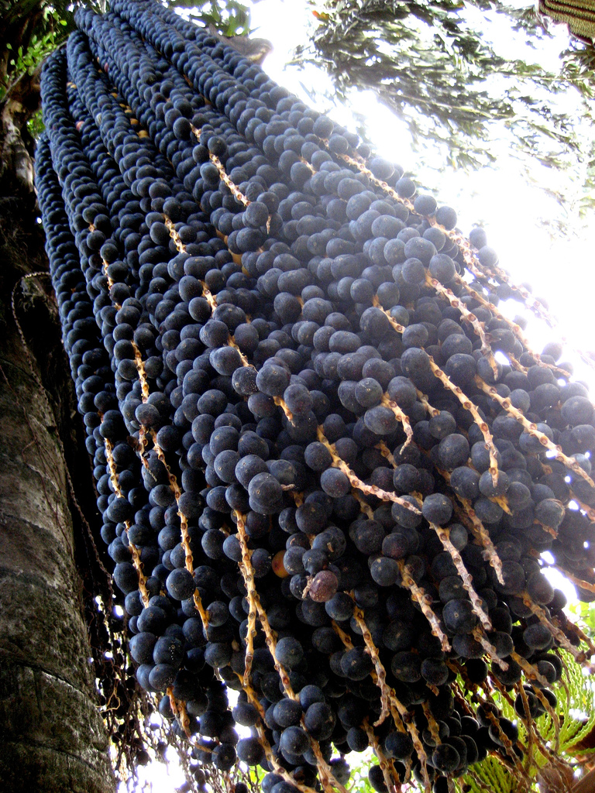
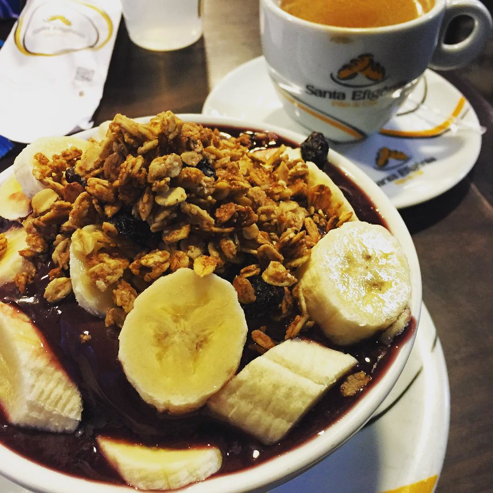

What is açai
Açaí na tigela ("açaí in the bowl") is a northern Brazilian dessert, Native people used to prepare it regularly. It is a dish made with the frozen and mashed fruit of the açaí palm, which has berries described as having an "earthy" or creamy taste. Its texture and taste are really appealing. It is served as a smoothie in a bowl or glass, and is commonly topped with powdered milk and banana, and then mixed with other fruits and guaraná syrup.
Although açaí na tigela is commonly consumed all over Brazil.it has become more regionalized mainly in Pará, Rio de Janeiro, Florianópolis, São Paulo, Goiás and along the northeastern coast, where it is sold in kiosks lining the beach promenade and in juice bars throughout the cities. Preparation is different from region to region. Tapioca pearls are a common topping in northern Brazil. The original recipe contains shrimp or fried fish and tapioca or farofa, and is usually savoury. It is common to see açaí served with fish and cassava. The sweet variety, which contains granola, banana, blueberry, strawberry, goji berry, and other fruits, as well as sugar, is more common in southern parts of the country.
 